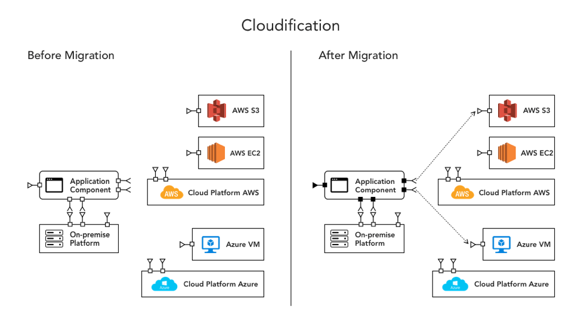
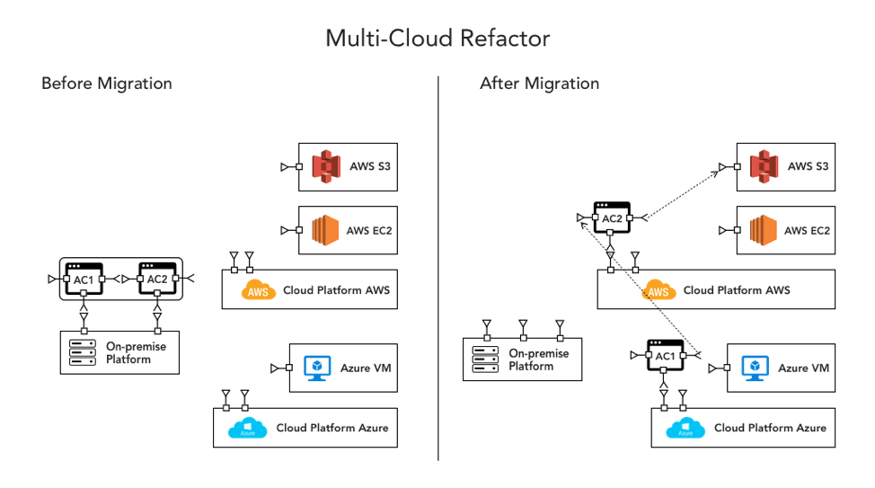
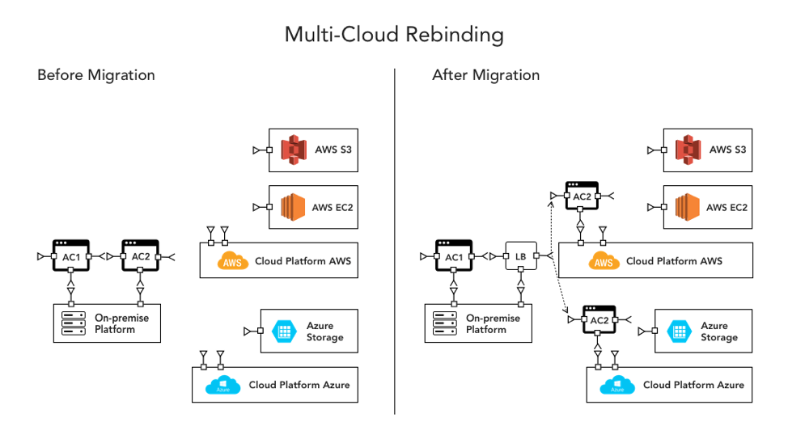
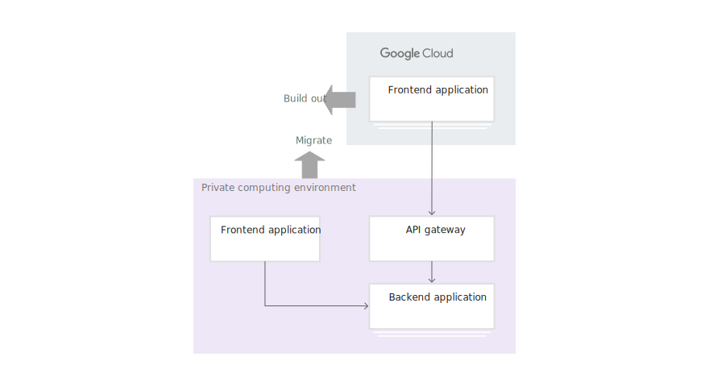
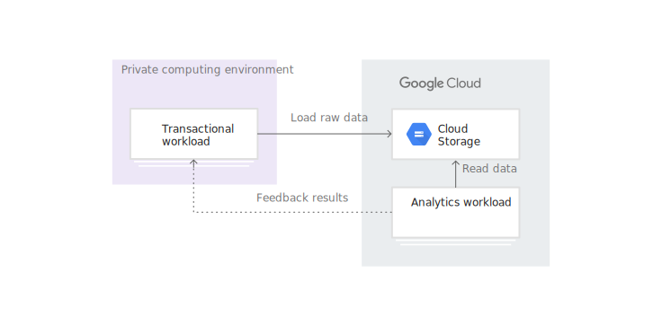
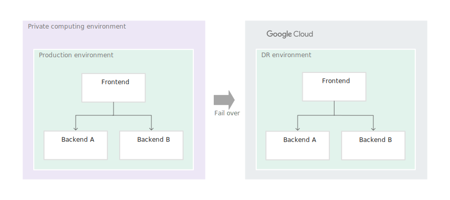
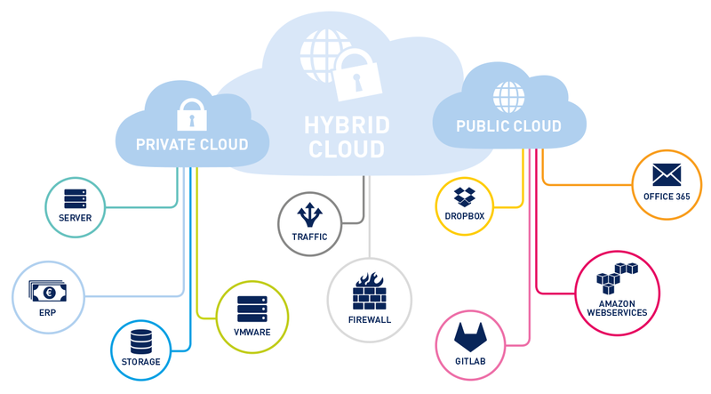
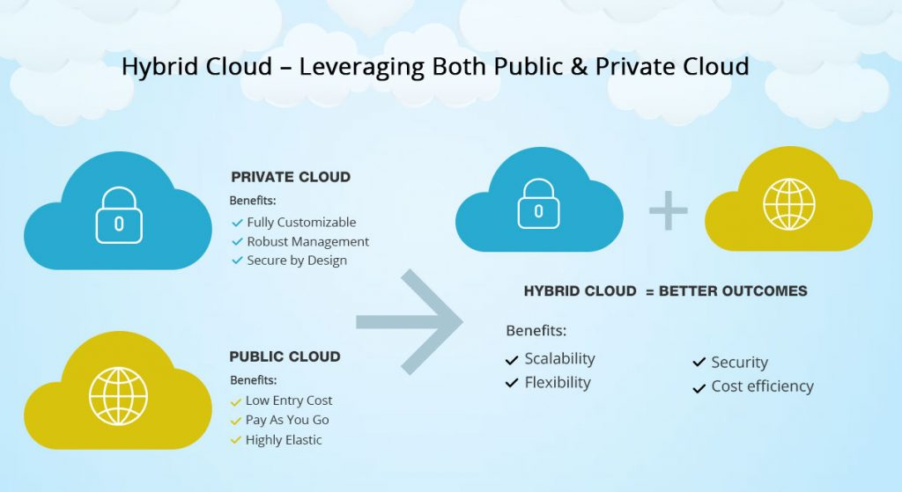

Hybrid Cloud
Derm Duncan
Multi Cloud (Core CSPs)

Deploying a multi-tenant application across multiple cloud platforms can be very challenging. But what designs exist for multi-cloud strategies?
Incorporate Cloud Services in on-prem app
Migrate different apps to different CSPs
Single app hosted on multiple CSPs
Hybrid Cloud
Tiered Hybrid

Analytics Hybrid

DR Hybrid

Hybrid Cloud Challenges

Hybrid Cloud Advantages
